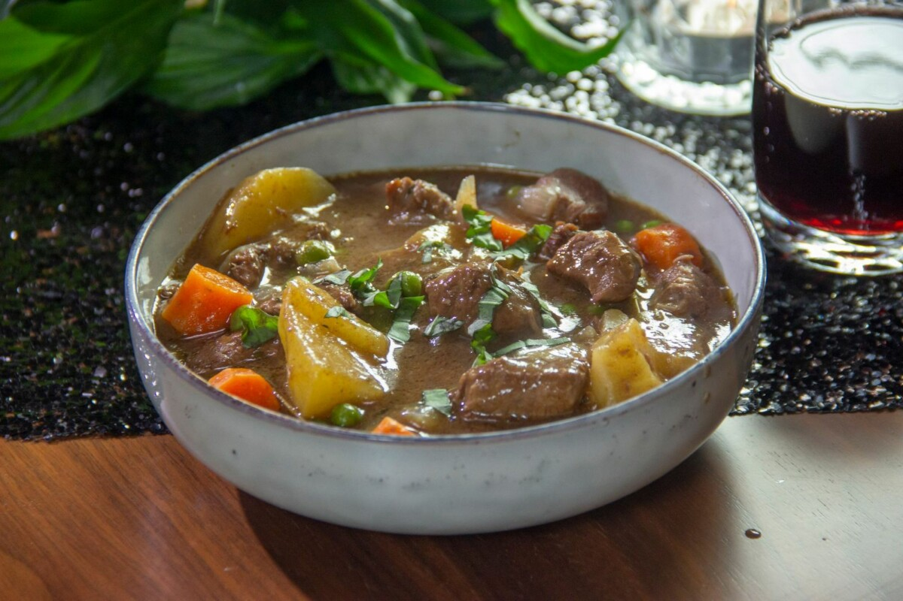

Beef Stew Recipe

Description
The beef and red wine stew is like a type of stew where the meat juice is characteristic, since it is where the flavors are concentrated.
It will be made with a base of lean beef in pieces, along with potatoes, carrots, onions and peas. It is ideal to accompany with white rice.
Ingredients
- ½ cups (cup) of wheat flour
- ½ tsp garlic powder
- 2 spoon vegetable oil
- 1 tsp pepper
- ½ tsp onion powder
- 1 tsp paprika
- 1 tsp salt
- 1 cups (cup) of red wine
- 2 cups (cup) of meat broth
- 2.5 lbs (1 kg) beef chunks
- 2 bay leaves
- 1 tsp Worcestershire sauce
- 3 large potatoes cut into large cubes
- 3 sliced carrots
- 1 cups (cup) of onion chopped into medium cubes
- 1 cups (cup) of peas
- several sprigs of fresh thyme
Step by step preparation
- Start your recipe and add the wheat flour to the bowl.
- Now, add the salt, paprika, pepper, garlic powder, and onion powder.
- Then, add the chopped beef into pieces and mix well so that all the meat is impregnated.
- In a saucepan over medium high heat, heat oil and add the meat (removing excess flour beforehand). Cook the meat until browned.
- Lower the heat to medium and pour the wine into the meat and mix. Cook until the alcohol evaporates, about 4 to 6 minutes.
- Pour in the beef broth, bay leaf, thyme and Worcestershire sauce. Cover and cook for 1 hour.
- After time, add the potatoes, carrots and onion.
- Now mix and cook for another 40 minutes.
- Add the peas and cook for 10 minutes.
- Turn off, let warm and serve with white rice.